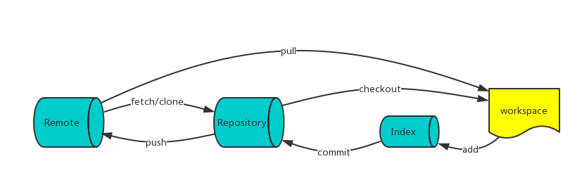

远程仓库¶
远程管理¶
git clone https://github.com/respawner/looking-glass
git pull
git fetch
git push origin master
git remote
git remote -v
git remote add xxx http://xxx
git remote show origin
git remote rename pb paul
git tag -a v1.0 -m "abc"
标签管理¶
git tag -a v1.4 -m 'my version 1.4'
git show v1.4
git tag -a v1.2 9fceb01
# 对历史打标签
git push origin v1.5
# 将标签推向远程
git push origin --tags
# 推送多个标签
git checkout -b version2 v2.0.0
# 检出标签